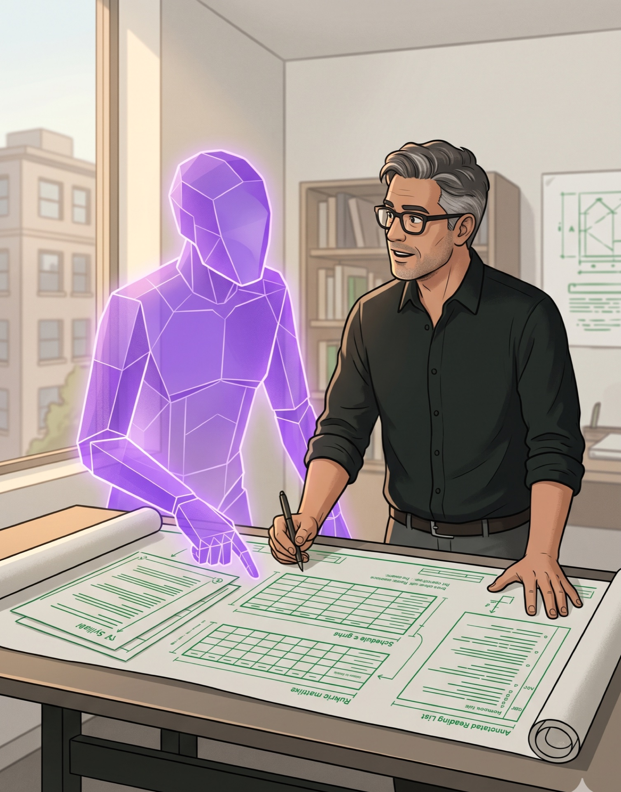
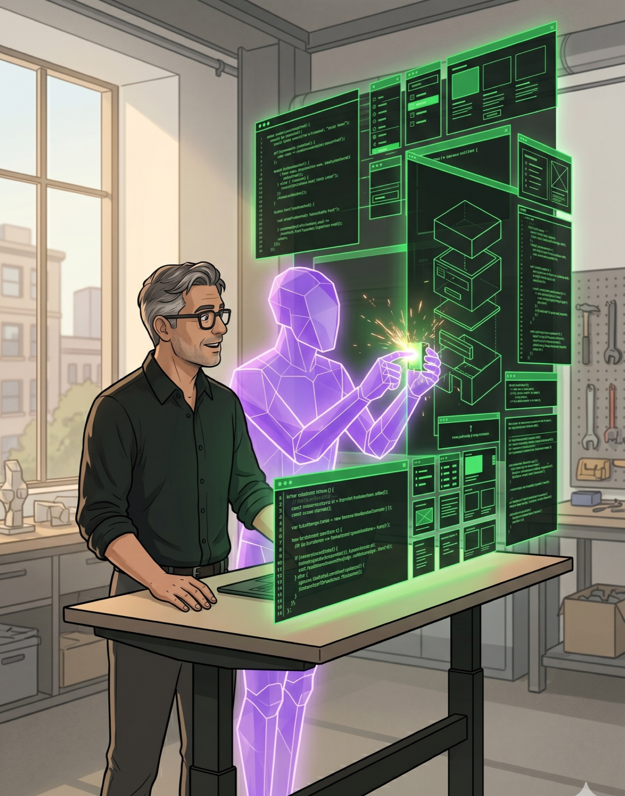
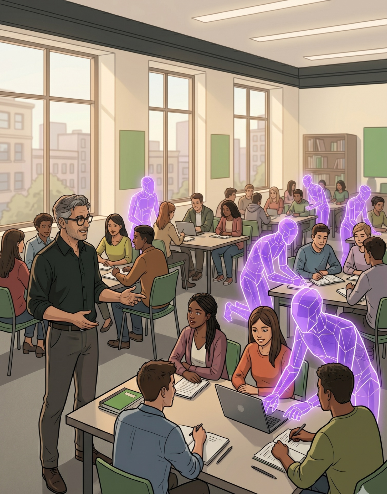
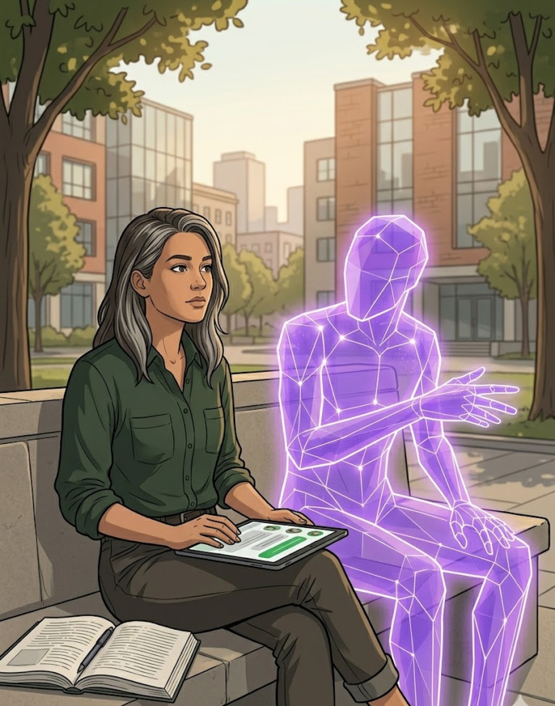
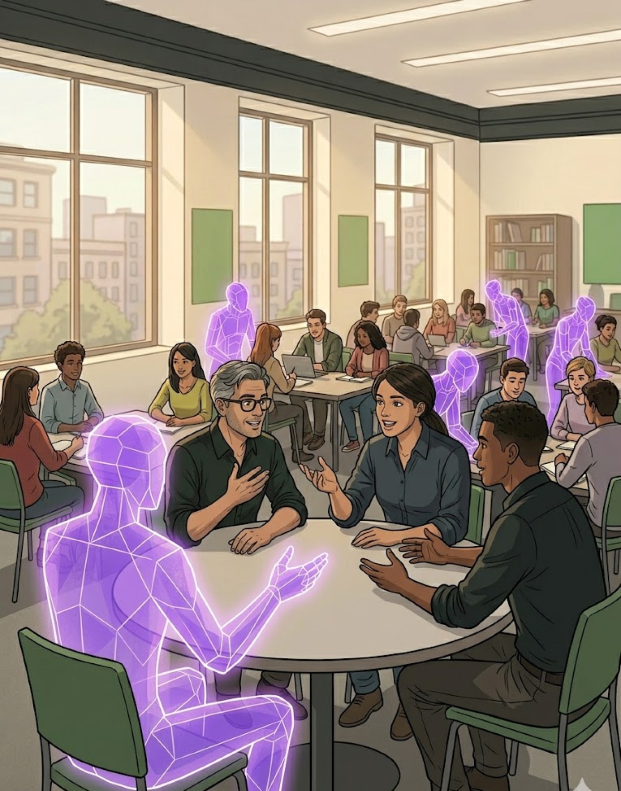

I love to teach, and I love to build. I teach students to build—with code, and now with AI.
A.B. (Physics) and Ph.D. (Computer Science) from Harvard, supervised by Matt Welsh. Deployed wireless sensor networks on active volcanos. Researched mobile systems at the University at Buffalo, taught operating systems and internet basics, and built the world’s first smartphone platform testbed. Now Teaching Professor at Illinois, teaching computing to thousands of students per year using novel technology and pedagogy.

Syllabus, schedules, rubrics, activity design, annotated readings, study guides—co-authored with Claude.

Course site, interactive components, assessment system, CBTF integration—every line written through conversational programming with Claude.

Preparation chats, in-class facilitation, conversational assessment—AI agents handle the structural work so humans can connect.

A structured chat works through the reading. A hidden second agent scores engagement; readiness levels surface to the instructor before the meeting starts.

No lecturing. Agents facilitate small-group discussion, surface patterns across the room, and signal when a group is ready to share. Humans do the thinking and talking.
This way, the models only know as much
about the Korvath Procedure as we tell them.
usingandunderstanding.ai/blog · Assessing Conversational Assessment
Students could continue any AI project they’d started during the semester.
Every single one chose to keep building with Replit.
Capped with a video walkthrough—what you built, who it’s for, what was hard, what surprised you—in a public showcase.
Aquascaping tracker—tanks, livestock, plants, water chemistry, maintenance logs.
Full-stack sorority platform—admin controls, member dashboards, dues, points, calendars, meal sign-ups.
AI collaboration is a distinct skill that is independent from—but related to—classical programming.